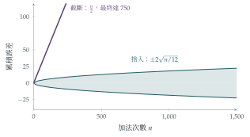

STEP II 1993，第 15 題
繼續之前，請先閱讀題目（原題為英文）。題目載於 STEP Support Programme 的題目資料庫： step.maths.org/questions/93-s2-q15
引子
1982 年，溫哥華證券交易所推出了一個新指數，起始值為 \(1000\)。每當有股價變動，指數便會重新計算，並截斷（truncate）至小數點後三位。每次截斷平均損失 \(0.0005\)，看來微不足道。可是每天大約要重新計算 \(3000\) 次，二十二個月後，儘管大市上升，指數卻只剩下約 \(520\)。經正確重算後，指數一夜之間躍升至約 \(1100\)。
這道題目解釋了箇中原因。截斷誤差（truncation error）全部朝同一方向，因此會穩步累積，與運算次數成正比。捨入誤差（rounding error）則有正有負，大部分互相抵銷：它們的增長速度只相當於運算次數的平方根，這正是中心極限定理（central limit theorem）（第 12.24 節）所預測的隨機漫步（random walk）行為。
動筆之前
若某數的小數部分 \(U\) 在 \([0, 1)\) 上均勻分佈（uniform），把該數截斷時誤差是多少？捨入時又是多少？兩者的平均值（mean）和方差（variance）各是多少？
截斷是以 \(\lfloor a\rfloor\) 取代 \(a\)，誤差（真確值減近似值）為 \(U\)，在 \([0, 1)\) 上均勻分佈：平均值為 \(\frac12\)，方差為 \(\frac{1}{12}\)。捨入所得的誤差在 \((-\frac12, \frac12]\) 上均勻分佈：平均值為 \(0\)，方差為 \(\frac{1}{12}\)。
逐步解題
階段 1 總誤差
加了 \(1500\) 個數之後，總誤差是 \(1500\) 個獨立（independent）誤差之和，根據中心極限定理，它近似於正態分佈（normal distribution）：
LEP（捨入）：平均值為 \(0\)，方差為 \(\frac{1500}{12} = 125\)，標準差（standard deviation）為 \(\sqrt{125} \approx 11.18\)。
VOZ（截斷）：平均值為 \(\frac{1500}{2} = 750\)，標準差同樣是 \(11.18\)。
階段 2 出現大誤差的概率
對 LEP 而言，若 \(E \sim \mathrm{N}(0, 125)\)，\(\mathrm{P}(|E| > 15)\) 是多少？對 VOZ 而言，誤差幾乎必然落在哪裏？
對 LEP 而言，\(\frac{15}{11.18} \approx 1.342\)，所以 \[\mathrm{P}(|E| > 15) \approx 2\bigl(1 - \Phi(1.342)\bigr) \approx 2 \times 0.090 = 0.18.\] 對 VOZ 而言，誤差約為 \(750 \pm 11\)；其絕對值小於 \(15\) 的概率基本上是零，所以 \(\mathrm{P}(|E| > 15) \approx 1\)。■
階段 3 可以做多少次加法？
做了 \(n\) 次加法後，LEP 的誤差的標準差為 \(\sqrt{n/12}\)。何時有 \(\mathrm{P}(|E| < 10) \geq 0.9\)？
我們需要 \(\frac{10}{\sqrt{n/12}} \geq 1.645\)（因為 \(\mathrm{P}(|Z| < 1.645) = 0.9\)），即 \(\frac{n}{12} \leq \bigl(\frac{10}{1.645}\bigr)^2 \approx 36.95\)，所以 \(n \leq 443\)。LEP 可以做大約 \(443\) 次加法。■

回顧
為每個誤差建立模型。小數部分均勻分佈，令每個誤差都有簡單的分佈。
把平均值和方差相加。平均值可以相加（得出偏差 \(\frac n2\)），而對於獨立的誤差，方差同樣可以相加。
正態近似。中心極限定理把 \(1500\) 個均勻誤差之和化為正態分佈。
背後的數學
偏差與方差
截斷是有偏（biased）的：其誤差的平均值不是零，而偏差（bias）會線性累積。捨入是無偏（unbiased）的，其誤差的表現有如隨機漫步，增長速度相當於 \(\sqrt n\)。經過一百萬次運算後，兩者的分別就是數量級為 \(500\,000\) 的誤差與數量級為 \(300\) 的誤差之別。這與實驗中系統誤差（systematic error，例如儀器校準失準）和隨機測量誤差（random error）之間的區別如出一轍：把多次測量結果取平均，可以減少隨機誤差，對系統誤差卻毫無作用。
浮點數
所有電腦都只能以有限的精確度儲存實數，每次算術運算都要把結果捨入。現代電腦遵從 IEEE 754 標準，把結果捨入至最接近的可表示數；若剛好位於兩數正中，則取末位為偶數的一個，目的正是令捨入平均而言無偏。即使如此，把大量數字相加時若不小心處理，仍會損失準確度；William Kahan 的補償求和（compensated summation）算法（1965 年）會記錄失去的低位數字，再把它們加回去。1991 年波斯灣戰爭期間，一個愛國者導彈連未能攔截一枚來襲導彈，原因是它的時鐘以十分之一秒為單位計時，而這個數無法以二進制準確儲存；連續運作 \(100\) 小時後，截斷誤差已增至約三分之一秒，足以令目標位置的估算偏差超過半公里。
溫哥華證券交易所指數於 1982 年 1 月設立，起始值為 \(1000.000\)。到 1983 年 11 月，儘管大市普遍上升，指數卻已跌至約 \(524\)。顧問發現，指數每天重新計算數千次，而每次都截斷（而非捨入）至小數點後三位。經過一個周末的正確重算，指數重開時約為 \(1098\)。這件事已成為數值計算課程中的經典警示。
思維技巧
正負號一致的誤差會線性累積；平均值為零的獨立誤差則按平方根的速度累積。先認清你面對的是哪一種。
在大學，數值分析（numerical analysis）研究誤差如何在計算過程中傳播，統計學則區分偏差與方差；「偏差–方差權衡」（bias–variance trade-off）是現代機器學習的核心概念。
延伸練習
修正 VOZ。若 VOZ 在最後把 \(\frac n2\) 加到答案上，其誤差的分佈是甚麼？它現在是否與 LEP 一樣好？
捨入至小數點後一位。若把各數捨入至小數點後一位，而被捨去的數字均勻分佈，求把 \(10\,000\) 個數相加時總誤差的標準差。
溫哥華指數。若指數每天重新計算 \(3000\) 次，每次截斷平均損失 \(0.0005\)，那麼在一年 \(250\) 個交易日內，指數會損失多少？
精確分佈。求兩個捨入誤差之和的精確密度函數（density，呈三角形）。若是三個誤差之和，試繪出其草圖。它多快便開始貌似正態分佈？
延伸閱讀
Nicholas Higham, Accuracy and Stability of Numerical Algorithms（SIAM）。關於捨入誤差的權威著作；第一章淺白易讀。
David Goldberg, “What every computer scientist should know about floating-point arithmetic”, ACM Computing Surveys 23 (1991)。經典之作，可在網上免費閱讀。
Tim Harford, How to Make the World Add Up（Bridge Street），探討數據中的系統誤差。